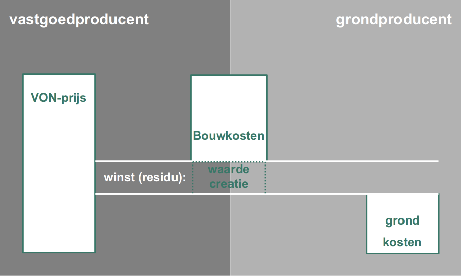

Residuele Grondwaarde#
De methode van de residuele grondwaarde is terug te voeren tot de 18de eeuwse engelse econoom Ricardo. Hij betoogde dat graan niet duur was vanwege hoge grondprijzen, maar dat het omgekeerde het geval is. Op enig moment zijn grondprijzen hoog omdat graan duur is. De winst op graan kan worden geïncasseerd door de grondeigenaar. Die beschikt immers over de schaarse productiefactor, de grond.
De residuele grondwaarde wordt als volgt berekend:
De opbrengsten zijn afhankelijk van de bestemming de kwaliteit, de plek en de marktomstandigheden. Bij een koopwoning is het de VON-prijs van de woning. Bij een huurwoning de te berekenen waarde van de huurwoning. Als die lager is dan de waarde van een vergelijkbare koopwoning zou de grondwaarde dus lager uitvallen. Het is ook mogelijk de opbrengst van de marktconforme koopwoning te hanteren, om zo ook onder de huurwoning tot een marktconforme grondwaarde te komen.
De te hanteren kosten zijn de zogenaamde stichtingskosten (stiko) ex. grond. (In de tekst wordt in plaats van stiko ex grond vaak de term bouwkosten gehanteerd.) Het gaat om alle die nodig zijn om het huis te maken, behalve de grondkosten. Op hoofdlijnen gaat het om:
aanneemsom
bijkomende kosten
ontwikkelkosten
BTW
Als we die allemaal van de VON prijs aftrekken blijft uiteindelijk de residuele grondwaarde ex. BTW over.
Als alle kosten en opbrengsten marktconform zijn ingeshcat kom je op die manier in principe op een marktconforme grondwaarde uit. Als je meer uitgeeft dan de residuele grondwaarde wotrdt je project verliesgevend. De RGW is de zogenaamde maximaal theoretische grondwaarde.
Grondwaarde, grondprijs en grondkosten#
De residuele grondwaarde gaat over de waarde van de grond. De grondkosten vormen een optelsom van alle kosten die nodig zijn om de grond klaar te maken om je bestemming er op te realiseren. Op hoofdlijnen gaat het om:
verwerving
bouwrijp maken
woonrijp maken
plankosten
De uiteindelijke prijs moet ergens tussen de RGW en de kostprijs in liggen. Als de prijs hoger is dan de grondwaarde wordt de ontwikkeling van de bestemming verliesgevend. Als de prijs lager ligt dan de grondkosten, wordt de grondontwikkeling verliesgevend.
Waarde ruwe grond#
Je zou ook nog een een niveau verder door kunnen rekenen naar de residuele waarde van ruwe bouwgrond:
Dat is de rekensom die je vaak maakt om de haalbaarheid van het project vast te stellen helemaal in het begin, als er nog niet is verworven.
Residu en markt#
In plaats van de residuele grondwaarde kun je ook het residu uitrekenen. Dit is wat overblijft als je de bouwkosten en de grondkosten aftrekt van de opbrengsten.
{kind=link}
Uitgangspunt in deze rekensom is dat nog niemand een deel van de (over)winst heeft geïncasseerd. De verwervingskosten houden geen rekening met de verdiencapaciteit van de ontwikkeling. In het perspectief van Ricardo zou het residu steeds kunnen worden geincasseerd door de grondeigenaar, omdat grond de schaarse productiefactor is. Dat is echter niet vanzelfsprekend het geval. Er zijn ook andere productiefactoren die schaars kunnen zijn.
Contractvorming in de bouw gaat dan steeds over de verdeling van het residu. De residuele grondwaarde berekening is in dat perspectief geen methode om een absolute waarde vast te stellen, maar een methode die behulpzaam is bij het tot stand komen van die verdeling. De uiteindelijke verdeling is afhankelijk van de markt.
In Nederland is het sinds begin jaren ‘90 lange tijd zo geweest dat de voorraad ontwikkellocaties de belangrijkste beperkende factor voor de woningproductie was. De residuele grondwaarde is dan een logische methode om de waarde van grond te benaderen. Vandaag is dat niet vanzelfsprekend het geval. Sinds de kredietcrisis (2008-2011) vormt de productiecapaciteit ook een belangrijke beperkende factor. De sterke stijging van de bouwkosten kun je beschouwen als een toedeling van een belangrijk deel van het residu aan aannemer en adviseurs, die een andere schaarse productiefactor beheersen namelijk arbeid. Het residu komt in steeds belangrijker mate toe aan de factor arbeid, wat tot uiting komt in het bouwkostenniveau. Uiteindelijk resteert dan minder residue om aan de grondwaarde toe te rekenen.